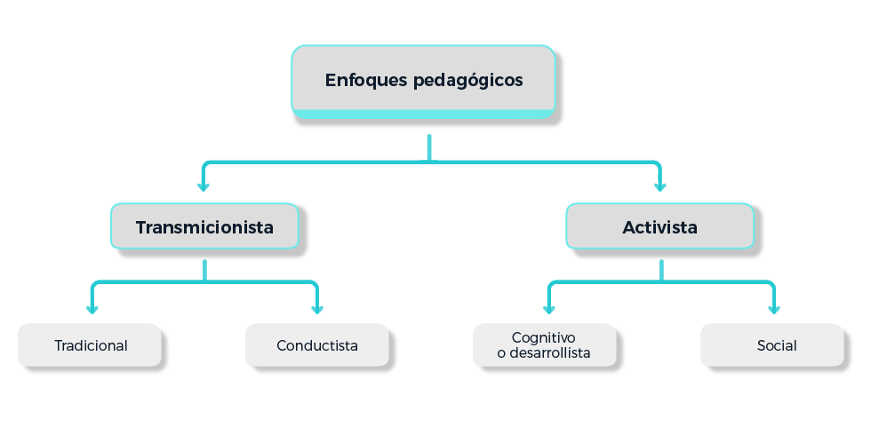
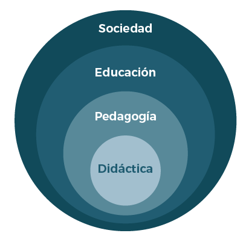

OVA 3. La didáctica en el área de la salud
¿Ha recibido alguna formación para ser docente? ¿Reconoce los diferentes modelos pedagógicos? ¿Identifica los elementos que usa la transposición didáctica? ¿Qué estrategias didácticas utiliza en sus clases?
Históricamente, se reconocen dos grandes tendencias pedagógicas, como se observa en la siguiente figura:
 Adaptado de: Flórez Ochoa, R. Evaluación, pedagogía y cognición. Editorial McGraw Hill: Bogotá. 1999.La didáctica es una rama de la pedagogía y es la disciplina que estudia el proceso docente educativo. Solo se dedica al proceso sistémico, organizado y eficiente que realizan los docentes sobre sus fundamentos teóricos.
Con el fin de generar una familiarización con estos conceptos, se le invita a resolver tres ejercicios que no pretenden evaluarlo, sino ayudarlo/a a reconocer qué claridad tiene sobre:
- Modelos pedagógicos más conocidos en nuestro medio.
- Conceptos básicos de la transposición didáctica.
- Aspectos a tener en cuenta en la preparación de sus actividades académicas.
Modelos pedagógicos
Desde la perspectiva de Flórez Ochoa (1999), un modelo pedagógico responde básicamente a:
- ¿Qué tipo de ser humano interesa formar?
- ¿Cómo o con qué estrategias metodológicas y evaluativas?
- ¿A través de qué estándares, contenidos, ejes temáticos y saberes?
- ¿A qué ritmo de aprendizaje debe adelantarse el proceso de formación?
- ¿Cuál es el tipo de relación entre maestro y estudiante?
A continuación, encontrará cuatro ambientes de aprendizaje que se irán formando en la medida en que ubique cada una de las ocho características que corresponden a cuatro modelos pedagógicos conocidos en nuestro medio.
Tradicional |
Conductista |
Desarrollista |
Socialista |
Transposición didáctica
En la didáctica, se habla del concepto de transposición didáctica como “el paso del saber sabio al saber enseñado”. Los saberes sabios son los que producen los sabios, genios, científicos y artistas. La transposición didáctica se refiere, a que la enseñanza universitaria se encarga de posibilitar que los saberes sabios se constituyan en saberes por enseñar, en saberes enseñados, en saberes por aprender y en saberes aprendidos .